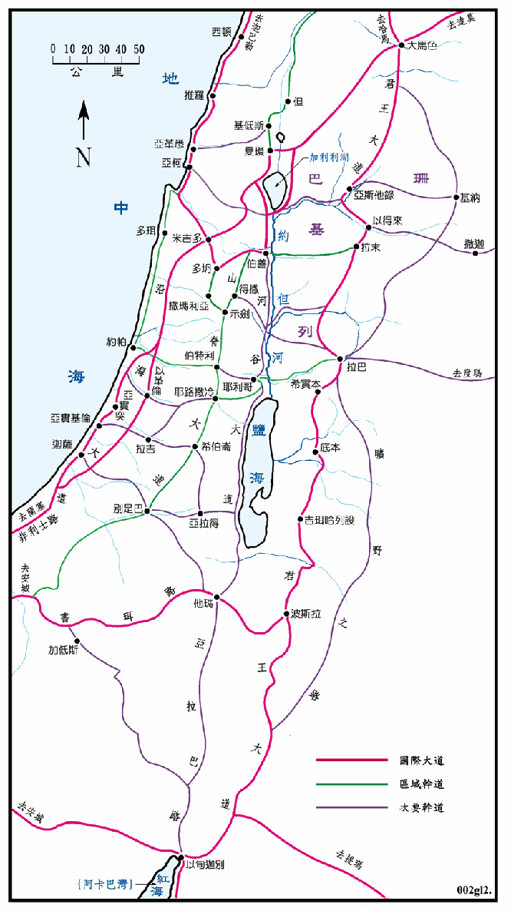

神所赐给亚伯拉罕和他的后裔之地，称为应许之地，在圣经中多次提到，但是有好几种不同的范围，详细的情形请参看「地名详解0797」条的说明。只是每个不同的范围中，都包括了内约但，即是约但河和地中海、利巴嫩和埃及小河间的地区，这块地可说才是迦南地的主要部份。迦南地在以色列人占领之后 (1406BC)，改称以色列地，待犹大覆亡之后 (586BC)，逐渐改称为巴勒斯坦，到以色列复国之后 (1948) 又称为以色列。以色列国和巴勒斯坦所指之地，约与迦南地之主要部份相若。
本图和以下三幅图中所说明的范围，都是按以色列人进迦南后，十二个支派所分得之地为主，约是约但河两岸之地，西界地中海，东界阿拉伯沙漠，北界利巴嫩和叙利亚，南界埃及小河、以东、摩押。由於迦南地与摩押，亚扪和以东地等地的关系密切，所以也一并说明。
迦南地有两条国际大道通过，一条是沿海大道，一条是君王大道，分别在东西两侧，已经在<总图一>中说明。此外最重要的就是南北向的山脊大道，是行经中央山脉山脊上的各大城市的大路，北起至伯善，经得撒、示剑、示罗、伯特利、耶路撒冷、希伯仑直到别是巴，再往西南行与通往埃及的书珥路相连，在这条路上发生许多的大事，所以重要性相对地提高。
耶路撒冷城是一个重要的交通枢纽，南北向有山脊大道通过，东向的大路经耶利哥渡约但河后通往拉巴，连接君王大道，是连接外约但地区的主要通道之一。向西北的大路可达约帕，使约帕成为耶路撒冷的港口，西南向的大道可达非利士地，是条重要的军事道路。
米吉多是另一个重要军事重镇，除沿海大道通过之外，尚有另一大道从亚柯湾沿基顺河而来，再往东经伯善，渡约但河到基列和巴珊，也是一条重要的横向的大道。而且这条大道在亚柯湾连接沿海自约帕来的大道，再沿海岸北上经亚柯、推罗、西顿、迦巴勒，可通往小亚细亚，这也是一条重要的国际大道。
在山脊大道上的示剑也是一个交通重镇，向西经撒玛利亚和沿海大道衔接，向东沿法瑞阿河渡过约但河后，向东沿雅博河与君王大道连接。在雅博河沿岸有许多重要的城市，如疏割、 努伊勒、玛哈念等。向东南可达拉巴，这也是一条重要的横向通道。
别是巴是南部重镇，是山脊大道的起点，又有横向的大道西通迦萨，向东经亚拉得通往死海和摩押，向南可到他玛。
从以旬迦别经他玛往北有一条可称为河谷大道的，是沿死海和约但河的两岸，经耶利哥、伯善、夏琐通往哈马，特别是伯善以北的一段最为重要，可视为国际大道。